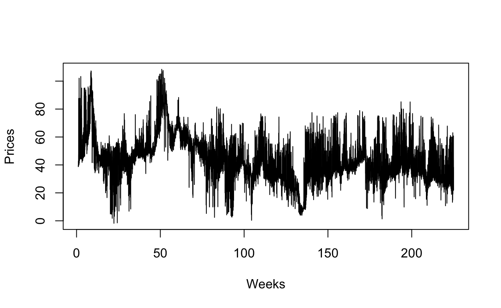
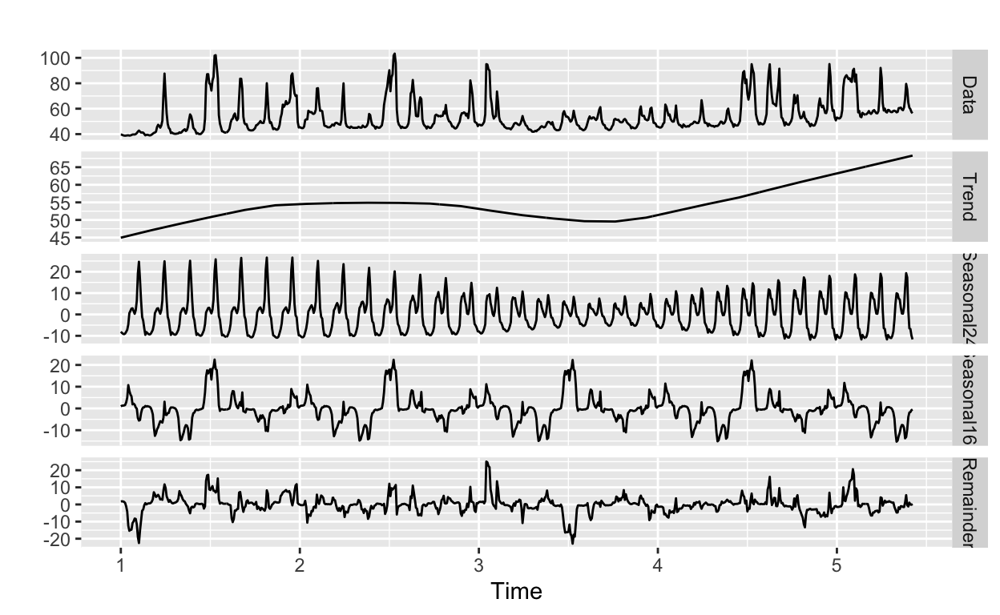
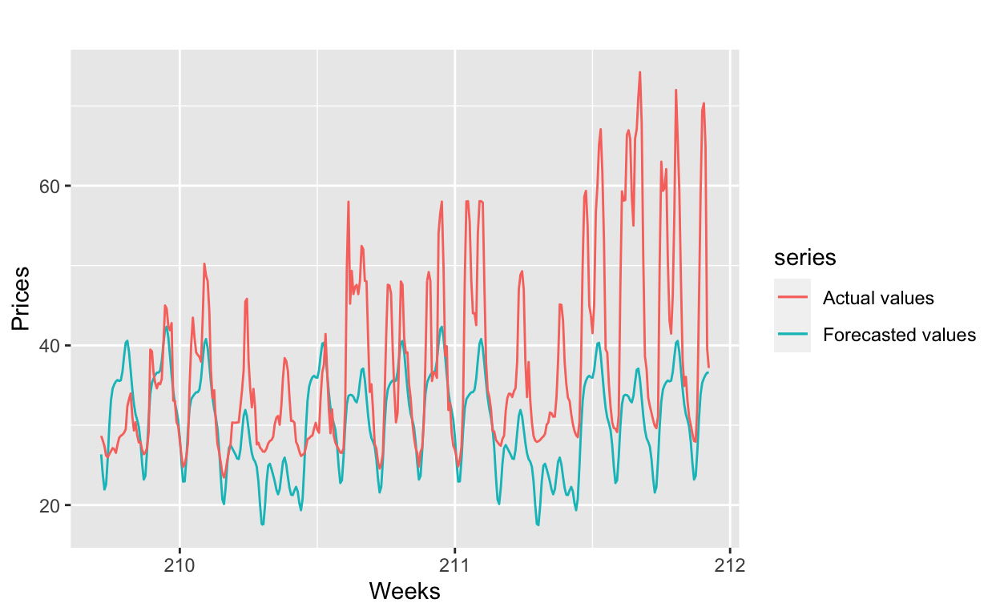
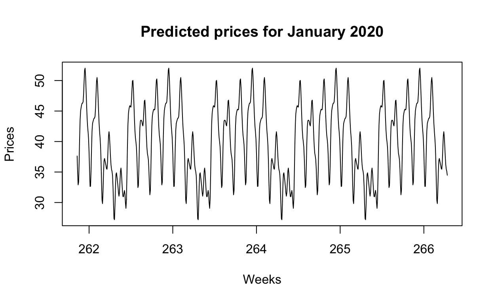

How to handle multiple seasonality in data?
This is another member of the “some of my past works” club. The task came once again from an external source and was originally undertaken in April 2020.
Calculate forecasted price for each hour of January 2020 (744 hours in total) assuming that average forecasted price for January 2020 is 40 EUR/MWh. Seasonality of electricity price must be taken into account when calculating hourly forecasted price.
Original data contains hourly spot prices starting from beginning of 2006 until 17/04/2014 and can be used to model electricity price seasonality. Each day auction is held in order to determine hourly spot prices for the next day.
I’ll start by explaining some assumptions and simplifictions that have been made.
Firstly, only data from 2010-2013 is used to train the model and the available data for 2014 as the test set. This is because most time series models do not work well for very long time series. Using data from 2006 is unlikely to provide any additional useful information about 2020’s prices, given there is no seasonality across decades. Furthermore, the model I’m using took way too much time and computing power to be created more than once for the whole of data, so there are good practical reasons for this as well.
Secondly, the forecast for January 2020 is the same as for January 2015, but adjusted for average forecasted price of 40 EUR/MWh. This of course assumes stationarity, for which there is significant evidence according to Augmented Dickey-Fuller test. This approach is taken, because forecasting hourly data 6 years into the future is hardly viable or realistic, forecasting models are not well suited for that. Furthermore, this assumption of average price for January 2020 supports the idea of not forecasting years 2014-2019 and only then 2020.
Thirdly, January 2020 is assumed to be a rather usual month with no extreme values. One of the characteristic features of electricity markets are the abrupt and generally unanticipated extreme changes in the spot prices known as spikes. For example, original data contained 12 data points, for which the price exceeded 1000 EUR/MWh, which is rather unlikely given expected mean of 40 for January 2020. However, as Janczure et al. (2013) argue, extreme observations should be filtered and replaced in electricity spot prices before estimating any deterministic seasonal patters. Therefore, any outliers and also missing values have been dealt with by using STL (Seasonal and Trend decomposition using Loess decomposition). To estimate missing values and outlier replacements, linear interpolation is used on seasonally adjusted series.
Lastly, a key point in electricity spot price modeling and forecasting is the appropriate treatment of seasonality. The electricity price exhibits seasonality at three levels: daily, weekly and annual. I will try to model daily and weekly seasonality and assume that annual seasonality is captured by the 40 EUR/MWh assumption.
My approach is fitting the TBATS (Trigonometric Exponential smoothing state space model with Box-Cox transformation, ARMA errors, Trend and Seasonal components) model, introduced in De Livera, Hyndman, & Snyder (2011). I chose this model for two main reasons: it allows for modeling complex multiple seasonality and it works well for high frequency data, such as hourly.
Steps shown below are:
Reading in and tidy data.
Creating a time-series object with multiple seasonality - daily and weekly.
Testing for stationarity.
Splitting the data into training set and test set.
Fitting the TBATS model on training set.
Forecasting prices from beginning of 2014 to end of January 2015.
Forecast January 2020 prices.
library(readxl); library(tidyverse); library(forecast); library(xts)
library(lubridate); library(tseries)
data <- read_excel("hinnad.xlsx")
#pivot data from a wide to long format, we now have 3 columns only
data <- data %>%
rename(date = ...1) %>%
pivot_longer(-date, names_to = "hour", values_to = "price")
#hourly date data from 2010 January to 2014 April
time_index <- seq(from = as.POSIXct("2010-01-01 00:00", tz = "UTC"),
to = as.POSIXct("2014-04-17 23:00", tz = "UTC"), by = "hour")
n <- length(time_index)
#chooses only data from years 2010-2014, leaving earlier data out
data <- tail(data, n)
data$date <- time_index
#data from 2010 onwards
head(data, n=3)
# A tibble: 3 x 3
date hour price
<dttm> <chr> <dbl>
1 2010-01-01 00:00:00 1 39.6
2 2010-01-01 01:00:00 2 39.5
3 2010-01-01 02:00:00 3 39.1Note that in the plots, it is always weeks on the x-axis.
###Create the time series object
#daily (24), weekly (24*7) seasonal periods
mts <- msts(data$price, seasonal.periods = c(24, 24*7))
#replaces outliers and missing values with previously explained method
mts <- tsclean(mts)
###Split the data
#2014 data as test set
test_n <- length(seq(from = as.POSIXct("2014-01-01 00:00", tz = "UTC"),
to = as.POSIXct("2014-04-17 23:00", tz = "UTC"), by = "hour"))
#2010-2013 as training set
train <- subset(mts, end=length(mts)-test_n)
test <- subset(mts, start=length(mts)-test_n+1)
#lets see what our time-series looks like:
plot(mts, xlab="Weeks", ylab = "Prices")

adf.test(mts) #data is stationary
Augmented Dickey-Fuller Test
data: mts
Dickey-Fuller = -9.7998, Lag order = 33, p-value = 0.01
alternative hypothesis: stationaryWith a p-value of less than 0.01, we can reject the null hypothesis and accept the alternative hypothesis, which is that our time-series is stationary.
Let’s also have a look at decomposed data to inspect the two types of seasonality.
#decompose one month (January 2010) for visualisation purposes
w <- window(train, end = time(train)[744])
#just an example of how the seasonality looks like in January
#seasonal24 is daily seasonality, seasonal168 is weekly seasonality
autoplot(mstl(w))

Creating the TBATS model:
#create TBATS model
#fit <- tbats(train) #<--- uncomment to actually fit the model
#saveRDS(fit, file = "fit.rds")
#Since it takes a lot of time, i'm loading a previously saved model
fit <- readRDS(file = "fit.rds")
fit
TBATS(1, {0,0}, 0.8, {<24,5>, <168,6>})
Call: tbats(y = train5)
Parameters
Alpha: 1.015974
Beta: -0.2241944
Damping Parameter: 0.800001
Gamma-1 Values: 0.01922611 0.001055555
Gamma-2 Values: 0.006996538 -0.001562361
Seed States:
[,1]
[1,] 46.3945353
[2,] -2.5676674
[3,] -5.3740340
[4,] -1.2900871
[5,] 0.8379294
[6,] 0.5454669
[7,] -0.3753072
[8,] -1.8371109
[9,] -2.9010861
[10,] 0.1053905
[11,] 0.1528641
[12,] -0.0626940
[13,] 0.4348419
[14,] 1.9206361
[15,] -0.7930991
[16,] 0.9253493
[17,] -0.9741675
[18,] -0.5727657
[19,] -3.5150505
[20,] 1.1856272
[21,] 0.3653065
[22,] 0.1015183
[23,] 1.1078930
[24,] -1.5331099
Sigma: 3.235104
AIC: 449338.9What does TBATS(1, {0,0}, 0.8, {<24,5>, <168,6>}) mean?
1 - no Box-Cox transformation was used
{0,0} - does not include ARMA errors
0.8 - parameter of trend dampening
<24,5> - daily seasonality is fitted with 5 Fourier terms
<168,6> - weekly seasonality is fitted with 6 Fourier terms
#number of data points
h <- length(seq(from = as.POSIXct("2014-01-01 00:00", tz = "UTC"),
to = as.POSIXct("2015-01-31 23:00", tz = "UTC"), by = "hour"))
f <- forecast(fit, h=h)
#Forecasted january 2014 - only small part of data is used here for better visualisation
plot(forecast(fit, h=744), include = 744)
#Plot two weeks of forecasted values from January 2014 against actual values
jan14_f <- window(f$mean, end = time(f$mean)[372])
jan14_test <- window(test, end = time(test)[372])
autoplot(jan14_f, series="Forecasted values") + autolayer(jan14_test, series="Actual values") +
ylab("Prices") + xlab("Weeks")

We can see from the plot above that daily and weekly seasonality is captured some-what well, but the overall level of actual prices is much higher. This might be cause we are not estimating annual seasonality in our model or first 2 weeks of January 2014 just happened to be more volatile.
We can also calculate some error measures for the test set.
ME RMSE MAE MPE MAPE
Training set -0.01085721 4.064628 2.716651 -1.121142 7.654116
MASE ACF1
Training set 0.9269896 0.005574984Now let’s come up with forecasts for January 2020. The forecast came out lower than 40 EUR/MWh, so shift all hourly prices higher equally.
### Forecast for January 2020
#find out the difference between assumed mean of 40 and forecasted average
diff <- 40-mean(tail(f$mean, n=744))
#raise the price of each forecasted hourly price by that difference
pred <- tail(f$mean, n=744) + diff
#confirm that the average of hourly prices is 40
mean(pred)
[1] 40plot(pred, main="Predicted prices for January 2020", ylab="Prices", xlab="Weeks")

I might be missing the idea of next day prices being determined at daily auctions. This could be implemented by only forecasting next 24 hours every day using available data, and then rolling the model forward by 24 hours, including the new observation. However, TBATS’ computational limitations (or perhaps more accurately, my computer’s computational limits) do not allow for this, so some other method, maybe a simpler ARIMA model could be considered. However such a model would probably then suffer from worse capability of modeling complex seasonality.
I’m not sure how to include the assumption of average forecasted price for January 2020 being 40 EUR/MWh before actually creating the model, so the simplest approach of adding a constant to all hourly prices was chosen. However, I believe for forecasting hourly prices, it’s most important to model daily and weekly seasonality, which I think is done reasonably well even without including this average price assumption before-hand.
Only one model considered. Ideally we would consider many more models, implement cross-validation, compare model fit by AIC for example, compare test set errors, also model annual seasonality etc.
Important limitations were already outlined at the time of writing the piece, such as no comparison to other models (even to some simple benchmark model). The approach considered here only uses past information of the same variable for creating forecasts - in a way that I actually didn’t understand at the time (I hadn’t taken Time Series Analysis at school yet). And not even once did I look at the autocorrelations of the time series or error distribution of the model. It’s probably not a good idea to run some kind of “automatic model” and hope the model comes out reasonable. At the very least, I should know what all the parameters of the TBATS function are and set them in a way that makes sense. That said, as I was later doing research for my master’s thesis, I saw some papers on how the TBATS model generally performs pretty well in empirical comparisons of statistical models for forecasting electricity prices.
Also, I now have two new ideas for blog posts as well. One is about a time series project I did at school to demonstrate a more formal/structured approach to ARMA/ARIMA models. Second is a short overview of my master’s thesis, which is about forecasting intraday electricity prices on the Nord Pool. In my thesis, I used a very different methodology, based on using a lot of market information and developing LASSO models. Both posts can then compared to this earlier work and hopefully will demonstrate some developments in modelling skills.
De Livera, Hyndman, & Snyder (2011): https://robjhyndman.com/papers/ComplexSeasonality.pdf
Janczure et al. (2013): https://doi.org/10.1016/j.eneco.2013.03.013